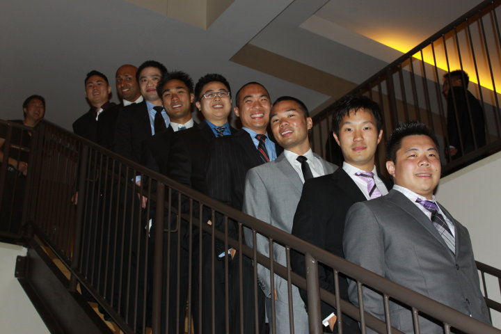

Gamma Beta Fraternity, Inc. is an Asian-American interest fraternity that was established Spring of 2000 at The University of Texas at Austin. Gamma Beta is dedicated to the betterment of men through brotherhood, academics, and community service. Gamma Beta is one of the fastest growing Asian-American interest fraternities at The University of Texas and continues to set new standards of excellence on campus. Furthermore, Gamma Beta is the only recognized Asian-American interest fraternity at The University of Texas.
Since its inception in the Spring of 2000, Gamma Beta was founded on the principles of morality, discipline, responsibility, unity, and academic excellence. At the time, the nine founders had no idea that what they would begin would become a phenomenon on the campus of the University of Texas at Austin. Not until a month before the fall semester began did the founders decide to try to start a new fraternity rather than a social club. The goal of Gamma Beta’s founders was to find a fraternity that would unite the Asian American community and provide an outlet for individuals seeking to join a Greek organization based on a gentleman's code of ethics.
Above all else, our first priority in the founding of Gamma Beta was to create a family environment where men of any color, creed, ethnic or religious background could join and feel welcome, where they could find a home away from home. And since our beginnings we have always remembered our roots, our values and the core of our beliefs—the creation of an unprecedented brotherhood.
Making Good Men Better, since 2000.
The nine founders of Gamma Beta.
In the spring of 2009, nine men came together to discover the true meaning of becoming a member of the Gamma Beta Fraternity. These nine men chartered the Zeta chapter of Gamma Beta Fraternity at the University of Houston.